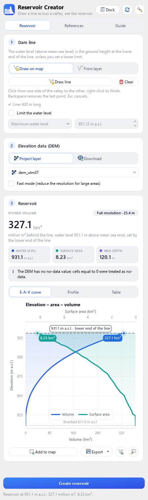
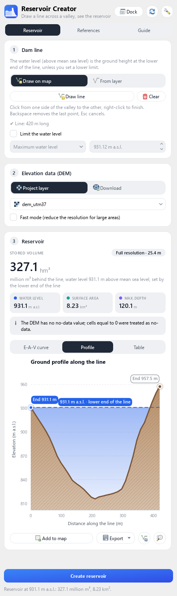
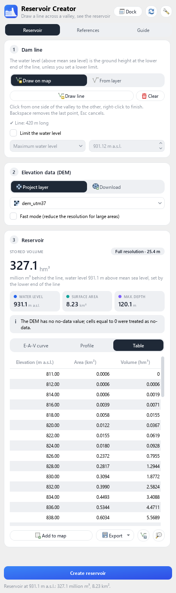
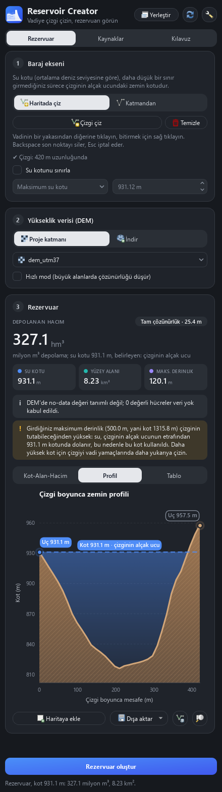
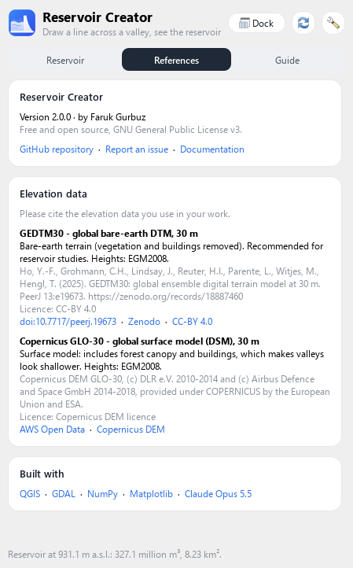
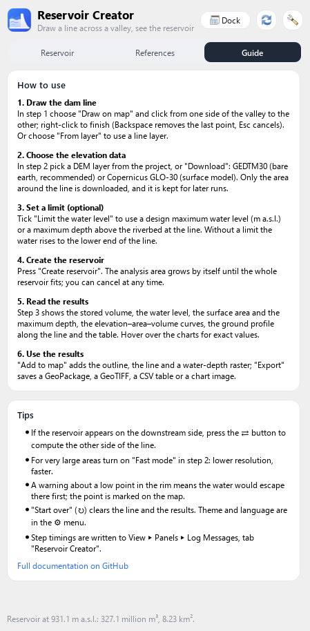

The panel, step by step
Three pages: Reservoir for the analysis, References for sources and links, Guide for a short in-app manual.
1 · Dam line
Draw on map
- Click from one valley side to the other
- Right-click or Enter to finish
- Backspace removes the last point, Esc cancels
From layer
- First line of a line layer
- or Use the selected feature
Limit: maximum water level
A design level in m a.s.l., e.g. to keep freeboard below the crest.
Limit: maximum depth
Metres above the riverbed at the line.
The lower of your limit and the line end is used. A limit the line cannot hold is reported, and the line's level is used.
2 · Elevation data
| Source | Type | Use it for |
|---|---|---|
| Project layer | any raster, any CRS | your own LiDAR / survey DTM (best) |
| GEDTM30 | bare earth, 30 m | recommended global option |
| Copernicus GLO-30 | surface model, 30 m | fast server; trees make valleys shallower |
3 · Results
Nothing runs until you press Create reservoir. The headline is the stored volume, with water level, surface area and maximum depth below it.



Add to map
Outline, line and water-depth raster in a new group.
Export
GeoPackage · GeoTIFF · CSV · chart PNG (white, report-ready).
⇄ Flip side
If the water ever appears downstream, compute the other side.
Settings
⚙ Theme and language
Auto / Light / Dark · English / Türkçe.
Dock, Start over
Dock attaches the window; ↻ clears the line and results.



Tips
- Prefer a bare-earth DTM; surface models include trees and buildings.
- Use a DEM made before the lake filled; afterwards it shows the water surface.
- A warning about a low point in the rim means water escapes there first; it is marked on the map.
- Step timings: View ▸ Panels ▸ Log Messages, tab Reservoir Creator.